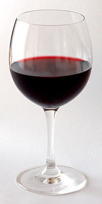
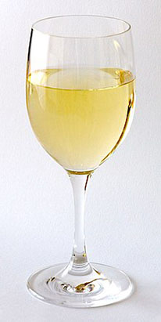
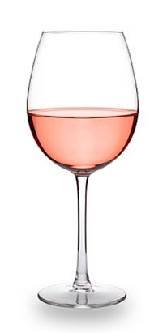

Reds
Red wine is a type of wine made from dark-colored grape varieties. The color of the wine can range from intense violet to brown.
Go Reds

Whites
White wine is a wine that is fermented without skin contact. The colour can be straw-yellow, yellow-green, or yellow-gold.
Go Whites

Roses
A rosé ([ʁoze]) is a type of wine that incorporates some of the color from the grape skins, but not enough to qualify it as a red wine.
Go Roses